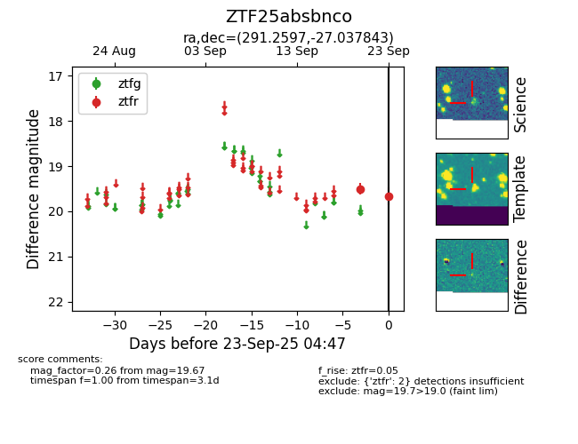

FINK: ZTF25absbnco
Lasair: ZTF25absbnco
ALeRCE: ZTF25absbnco
ZTF25absbnco (ztf,fink)
equatorial (ra, dec) = (291.2597,-27.03784)
galactic (l, b) = (11.5366,-18.84971)

last ztfr=19.67
2 ztfr detections